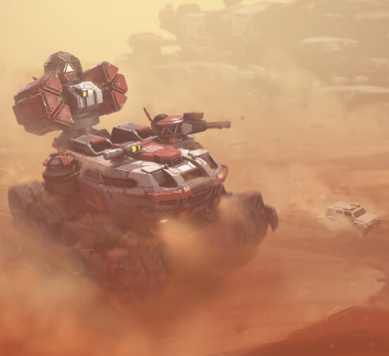

Mechabellum - самая ленивая игра

"Mechabellum" — это стратегическая игра, которая сочетает в себе элементы пошаговой тактики и управления ресурсами. Разработанная независимой студией, игра предлагает уникальный мир, где игроки управляют механизированными армиями и ведут битвы за контроль над территориями.
Геймплей
Геймплей "Mechabellum" включает в себя несколько ключевых аспектов:
Стратегическое планирование: Игроки должны тщательно планировать свои действия, распределяя ресурсы и строя базы. Эффективное управление ресурсами и технологиями является ключом к успеху.
Пошаговые сражения: Боевые действия происходят в пошаговом режиме, что позволяет игрокам внимательно продумывать каждый ход и использовать тактические преимущества.
Развитие технологий: Исследование новых технологий и улучшение мехов играет важную роль. Игроки могут модернизировать свои машины, делая их более мощными и эффективными.
Управление ресурсами: Сбор и управление ресурсами необходимы для поддержания армии и развития базы. Игроки должны балансировать между производством и боевыми действиями.
Графика и звук
Графика в "Mechabellum" выполнена в стилизованном виде, который подчеркивает механическую эстетику игры. Визуальные эффекты и анимация мехов создают атмосферу футуристических сражений. Звуковое сопровождение добавляет напряженности и динамики, делая боевые действия более захватывающими.
Сюжет и атмосфера
Сюжет игры погружает игроков в мир, где механизированные армии сражаются за контроль над ресурсами и территориями. Атмосфера "Mechabellum" наполнена духом стратегического планирования и тактических сражений, что делает игру увлекательной и захватывающей.
Многопользовательский режим
"Mechabellum" также поддерживает многопользовательский режим, где игроки могут соревноваться друг с другом в пошаговых сражениях. Это добавляет дополнительный уровень сложности и интереса, так как игроки должны учитывать действия своих противников и адаптироваться к изменяющимся условиям.
Заключение
"Mechabellum" — это увлекательная стратегическая игра, которая предлагает глубокий и разнообразный игровой процесс. Она сочетает в себе элементы пошаговой тактики и управления ресурсами, что делает её интересной для любителей жанра. Игра предлагает уникальный мир и атмосферу, которые понравятся как новичкам, так и опытным стратегам.